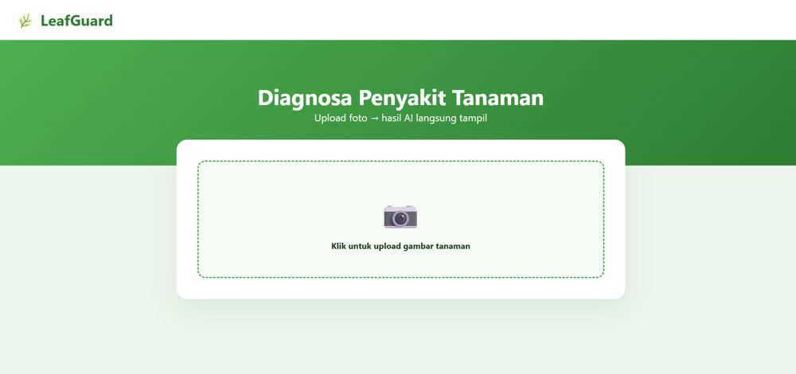
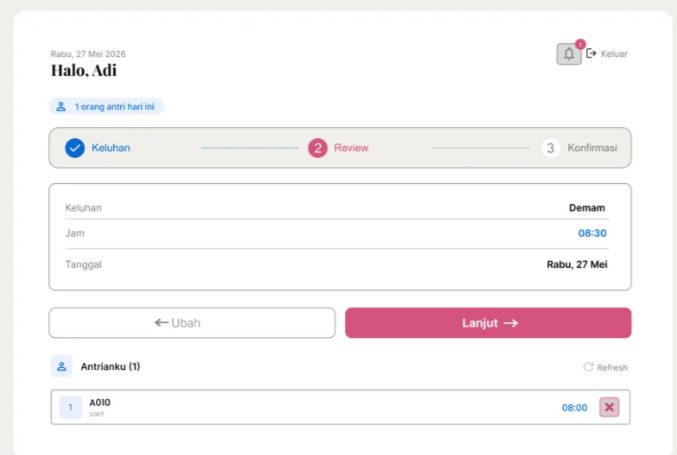
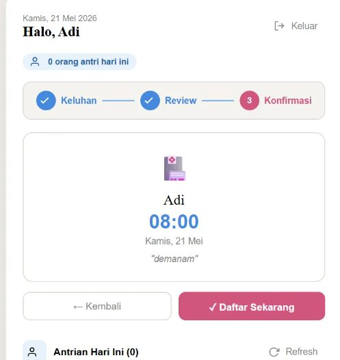
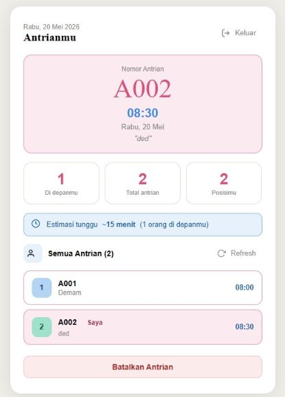

Stanley Dirk Nente
Computer Science student, AI and machine learning
I study at BINUS University and work on machine learning, computer vision and web projects. My paper on malaria detection from blood smear images was published at IEEE ICISS 2026. I'm looking for an internship where I can apply my AI and software skills to real projects.
Projects
Select a project to read how I built it.
Malaria detection from thin blood smear images A benchmark of general-purpose multimodal models against domain-specific models, 2026.
Question
Do models built for one medical task beat general multimodal models at spotting malaria in thin blood smear images, and do they still work on data they haven't seen?
What I did
I built one of the two domain-specific models, then trained and tested both on in-distribution and out-of-distribution data. We compared them with multimodal generalized models.
Findings
- On in-distribution data, the domain-specific models did better than the generalized models, as expected.
- Out of distribution, their metrics dropped much more than the generalized models' did.
- Averaged across all metrics, a generalized model did better than the domain-specific models.
Domain-specific model results
| Model | Acc | Prec | Rec | F1 | Macro F1 | Bal. Acc | AUROC | ECE | Brier |
|---|---|---|---|---|---|---|---|---|---|
| EfficientNet-B3 | 0.9744 | 0.9798 | 0.9688 | 0.9743 | 0.9744 | 0.9744 | 0.9953 | 0.0256 | 0.0219 |
| SPCNN | 0.9623 | 0.9733 | 0.9507 | 0.9618 | 0.9623 | 0.9623 | 0.9928 | 0.0226 | 0.0297 |
| Model | Acc | Prec | Rec | F1 | Macro F1 | Bal. Acc | AUROC | ECE | Brier |
|---|---|---|---|---|---|---|---|---|---|
| EfficientNet-B3 | 0.6184 | 0.8456 | 0.6382 | 0.7274 | 0.5460 | 0.5894 | 0.6294 | 0.0737 | 0.2276 |
| SPCNN | 0.7436 | 0.7883 | 0.9276 | 0.8523 | 0.4404 | 0.4731 | 0.2827 | 0.1843 | 0.2261 |
Leafguard A web app that diagnoses plant diseases from a photo using an AI agent, 2025.
What it does
A user uploads a photo of a plant and the website shows the AI agent's diagnosis of the disease right away. The interface is in Indonesian.
What I did
I developed the AI agent in n8n and connected it to the website.
Screen

Status
The live demo is offline. The AI agent ran on a free trial of n8n that has ended, so the site can no longer return diagnoses. The screenshot above shows the interface, and I can walk through how it worked.
QCare An automated patient queuing system for clinics, 2026.
What it does
Patients book a place in the clinic queue in three steps (complaint, review, confirmation) and then follow their queue number, position and estimated wait time. Patients and clinic staff get real-time queue updates. The interface is in Indonesian.
What I did
I designed and implemented the notification feature, tested the application and fixed bugs.
Screens



Publication
Stanley Dirk Nente, Demetrius Howard Setiawan, Ivan Sebastian Edbert, Samson Ndruru. "Benchmarking the Gap Between Multimodal Generalized and Domain-Specific Models in Identifying Malaria from Blood Test Imagery." 2026 13th International Conference on ICT for Smart Society (ICISS), IEEE, 2026.
Presented at the conference in August 2026, Bandung, Indonesia.
10.1109/ICISS71466.2026.11715041Skills
- Languages
- Python, Java, C++, SQL, JavaScript
- AI and data
- PyTorch, TensorFlow, scikit-learn
- Web and tools
- Next.js, Laravel, HTML, n8n, Docker, VS Code
- Studied
- Machine learning, natural language processing, computer vision, algorithms, databases
About
Bachelor of Computer Science, 2024 to expected 2028. GPA 3.50 / 4.00.
- Programs
- Excellence Program B2028 (Sep 2024 to Jun 2025); Laboratory assistant recruitment pre-training (Oct 2024)
- Conferences
- IFI Conference on Artificial Intelligence by Paris-Saclay University (Apr 2026)
Contact
I'm open to internships. The best way to reach me is email.